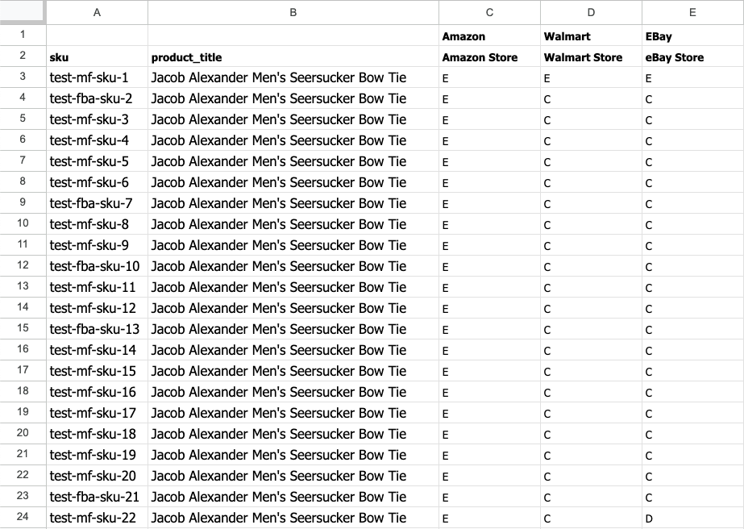
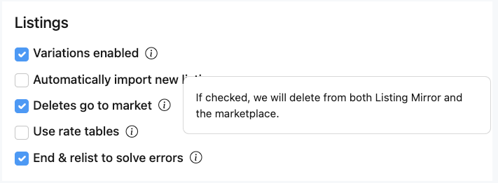
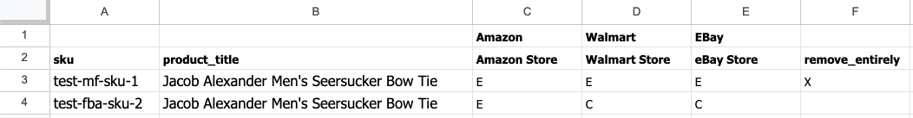

The Create & Delete spreadsheet enables users to effortlessly create or delete listings using their existing product data. Users can easily identify the marketplace where they are creating or deleting the listings. Additionally, our platform provides visibility into which marketplaces already have existing listings.
You can access this spreadsheet on the Import / Export page.
After Column B, you will find your marketplace integration connected to Listing Mirror. To create a listing, simply enter a C (for “create”) in the desired cell. Conversely, to delete a listing, enter a D (for “delete”) in the desired cell. If a cell contains an E (for “exists”), it means that a listing already exists on that marketplace. See example spreadsheet
When creating Amazon listings in Listing Mirror, it is important to note that the spreadsheet will try to add an offer to an existing Amazon listing if all the necessary information is provided for the product. However, if any required information is missing, Amazon will reject your request to add an offer. Learn more
When deleting listings from Listing Mirror, we consider your integration settings. Each integration has a choice to either remove the listings from Listing Mirror only or remove them from both platforms. Before removing any listings, please review your integration settings.
If you wish to remove the entire product along with any associated listings, simply place an X in the Remove Entirely column for the desired SKU. This will ensure the complete deletion of the product from our platform. See example spreadsheet
